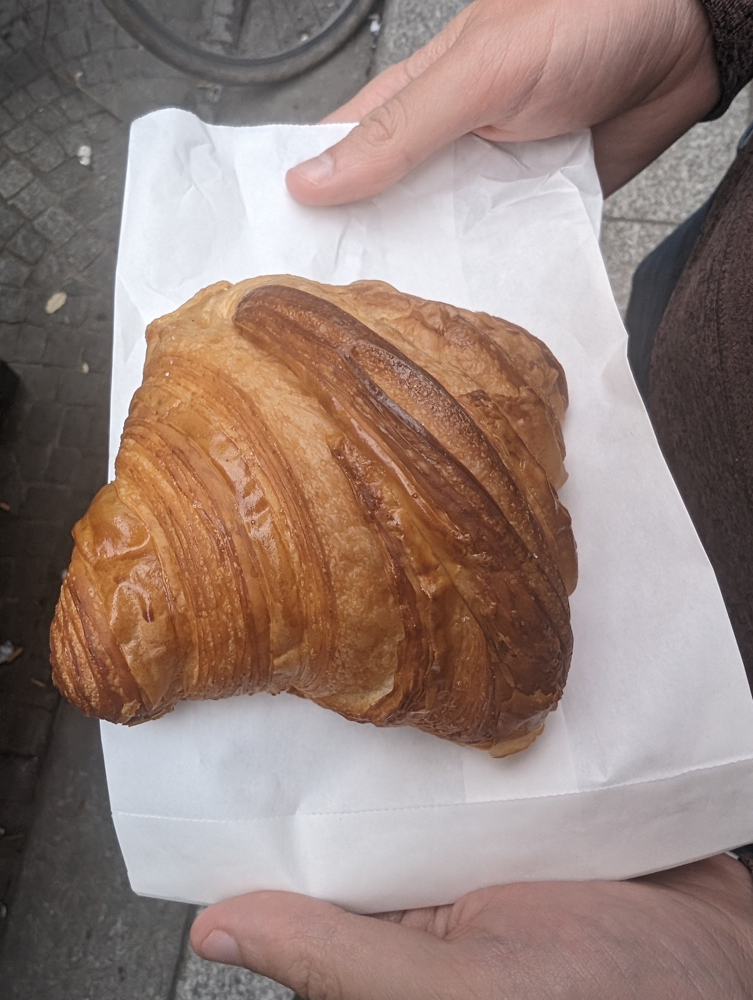
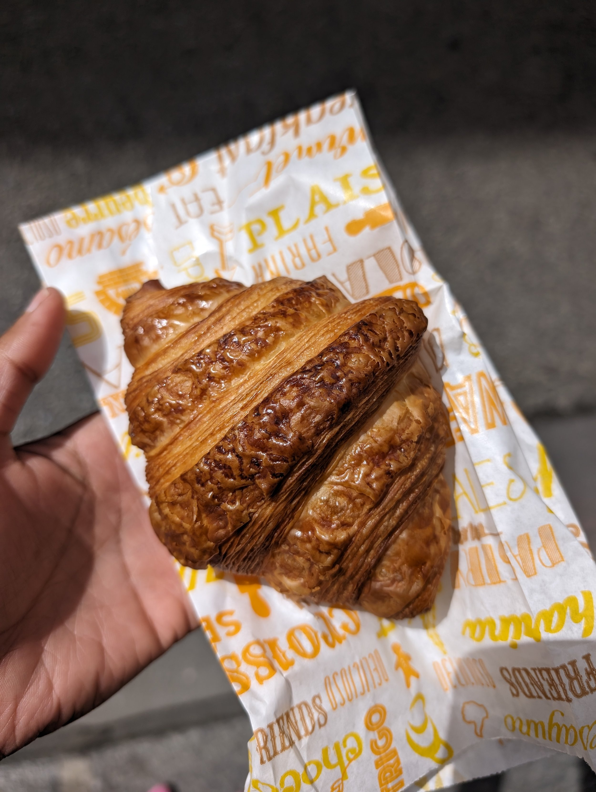
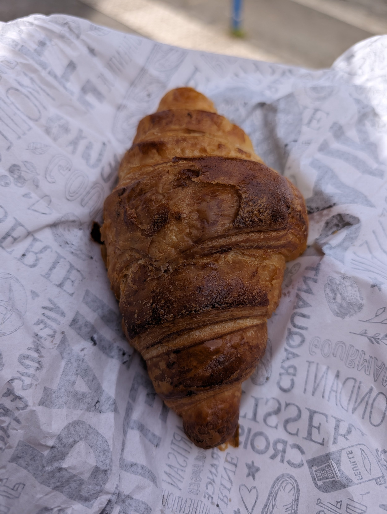
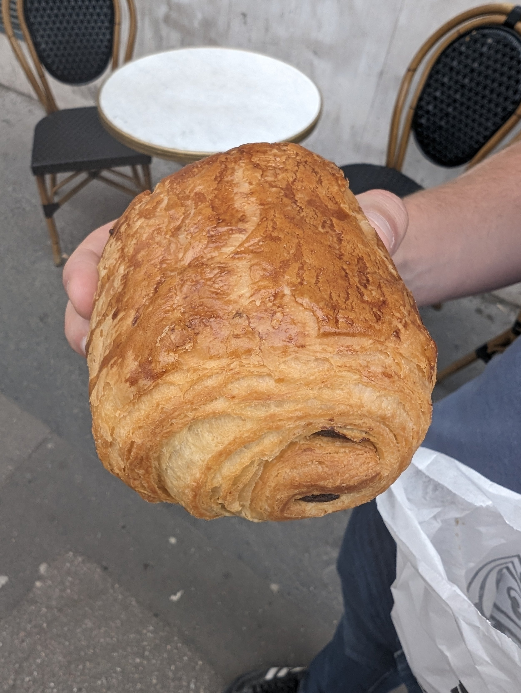
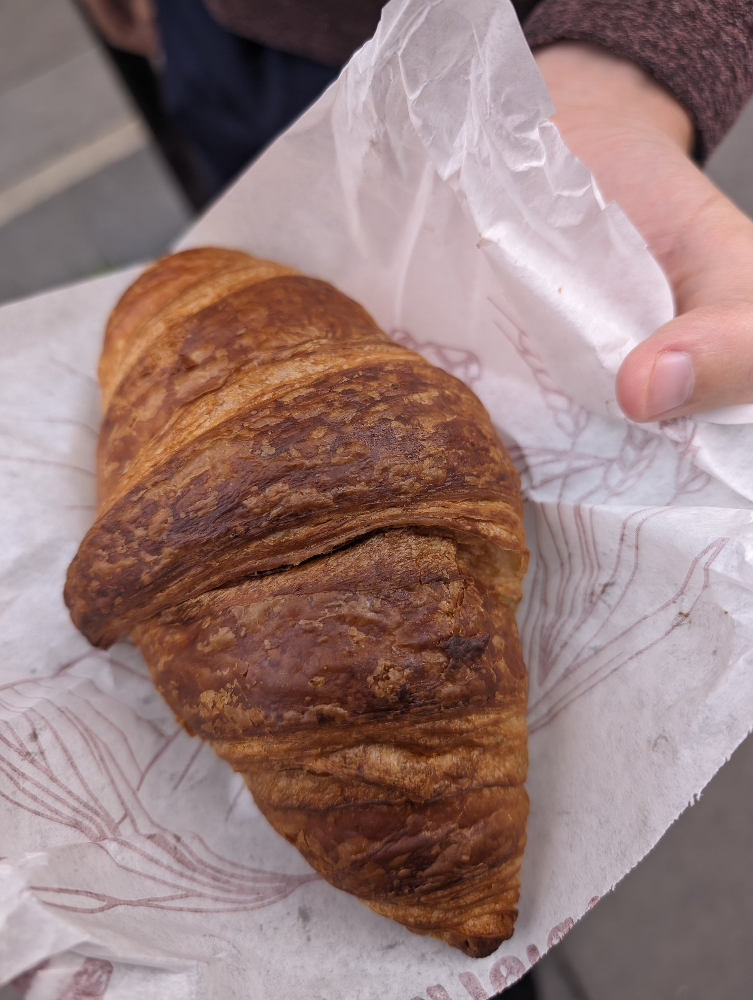
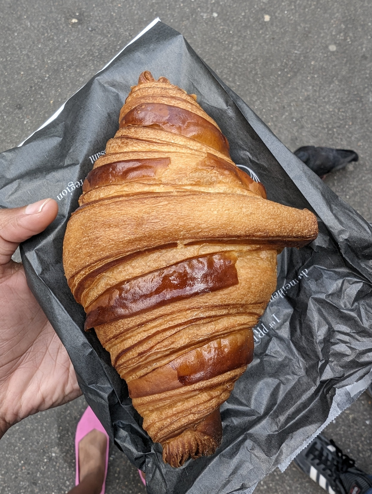
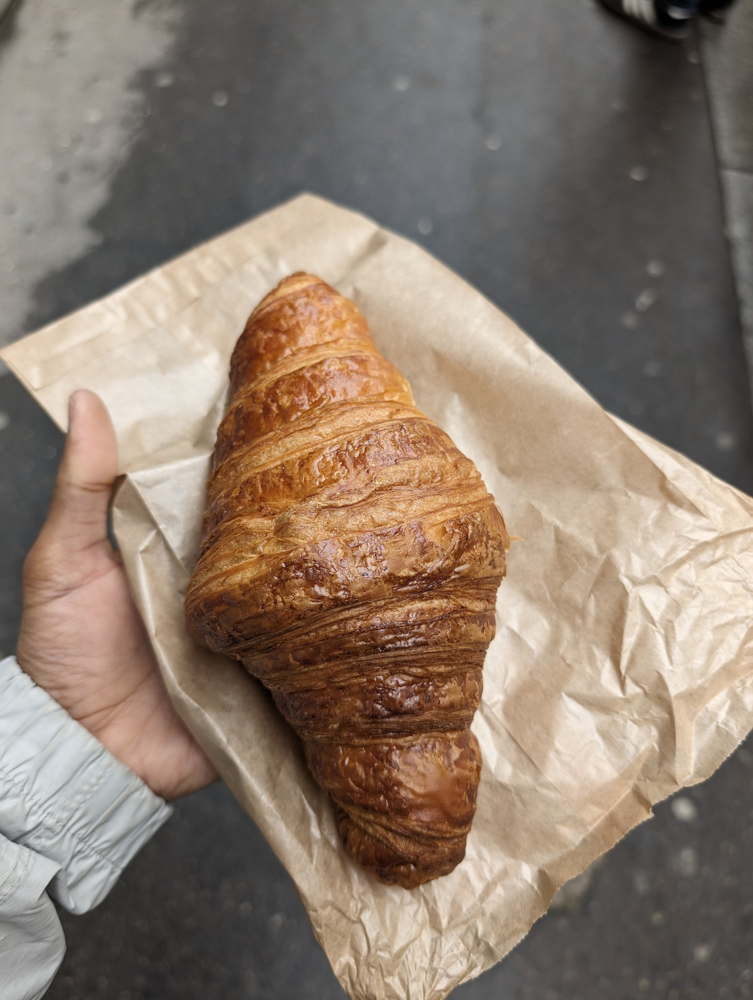
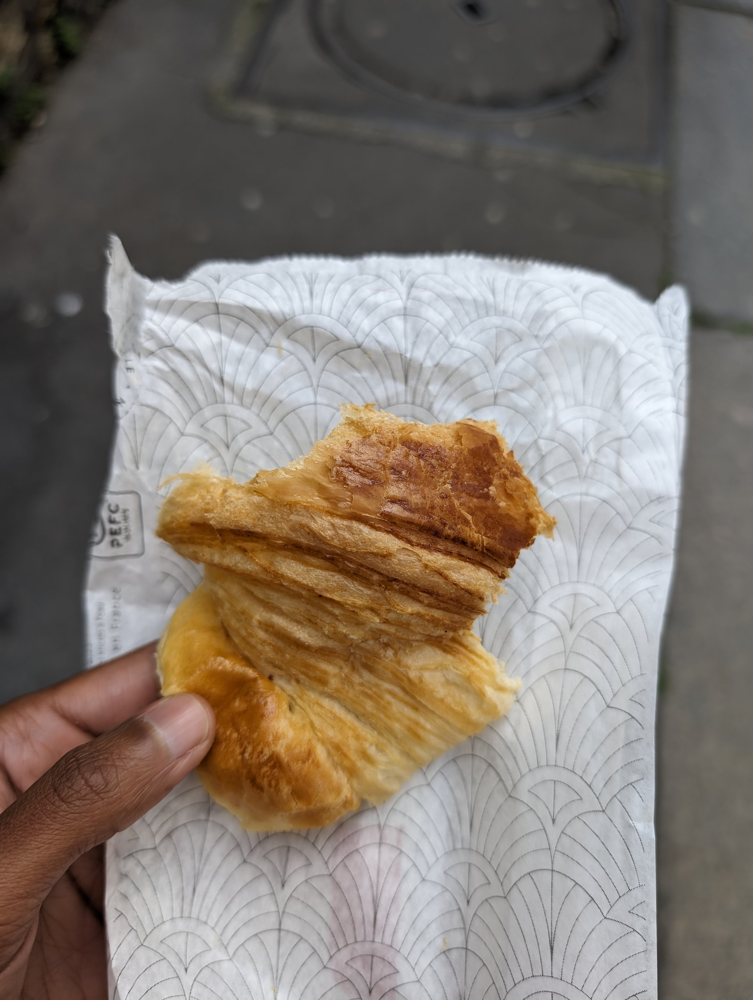

A fuller blog post about our time in Paris will come shortly, but I found it necessary to keep a detailed log of the 8 croissants we had during our short time in Paris in our attempt to find the best ones. For research purposes, you know!
First, I have some bad news: somehow Paris is not in our top four cities for best croissants, those distinctions belonging to Pittsburgh, Lyon, Toronto, and San Francisco (message either of us for the specific bakeries if you’d like!). In general, we found that how early you grab the croissant matters a lot (earlier when they are fresh out of the oven is better) and if a boulangerie is near a popular tourist attraction, the reviews are more likely to be inflated stating “BEST CROISSANT EVER IN MY LIFE” which yes, I’m ironically being judgmental about the tastes of tourists. Some of the best croissants were from the bakery across from our Airbnb that was poorly reviewed because “the lady at the counter was rude.” Don’t sleep on the freshly baked, deeply golden croissant from the random bakery that looks more like a nook though!
>

1st Place: The French Bastards
Google Maps: https://maps.app.goo.gl/w8qpu65rQhuozNFy8
Order eaten: 8th
Notes: this was pretty easily the best croissant. A good croissant is one where you can take a big bite out and the honeycomb structure doesn’t crush but rather bounces back after a couple seconds. This had a delicious flavor and you could definitely tell a touch more butter than the others. Delightfully crispy and flakey on the outside, pillow-like softness on the inside. This was the best Parisian croissant. It was good enough that we came back on our final day in Paris for their pistachio “roule” and a pain au chocolat that got accidentally smushed in transit to the airport and still made for a delicious snack while we sat on the floor of our boarding gate area waiting for our flight (side note: Beauvais Airport needs more chairs; there were more people on the floor than sitting in real chairs).
>

2nd Place: Notre Pâtisserie
Google Maps: https://maps.app.goo.gl/vhgkdUK8JAuKMyD49?g_st=ic
Order eaten: 4th
Notes: this was a more “patisserie” type croissant with stronger butter flavor and crispiness. It was so crispy that a bunch of pigeons came in to clean the Parisians streets that we were littering with croissant crumbs. This was the first croissant that we really thought was beyond “solid.”
>

3rd Place: Maison habhab
Google Maps: https://maps.app.goo.gl/neuj89WkTj2oVsBX9?g_st=ic
Order eaten: 5th
Notes: this was a delightful, fresh (got it in the morning) pastry that had a nice crispiness to it and good texture on the inside. It wasn’t as sourdough-y and it wasn’t as pastry-like but it was a really good croissant. It had a slight chewiness which is also why it didn’t beat out Notre Pâtisserie.
>

4th Place: Boulangerie Eric Kayser
Google Maps: https://maps.app.goo.gl/L9N9BHXCMk6izLk69?g_st=ic
Order eaten: 6th
Notes: Technically we had a pain au chocolat here so it wasn’t a direct comparison. The pastry was really good though; the texture of the pastry was very flakey and had a good open texture, even with the chocolate inside. It also had a little bit of chew to it which is why we placed it behind Maison habhab.
>

5th Place: Le Pain du Parc
Google Maps: https://maps.app.goo.gl/7Uzg4yx5Xb5rBFwH8?g_st=ic
Order eaten: 3rd
Notes: Deeper color. Ate this in the morning which I think meant that it was fresher. Had a bit of crispiness to it and was soft on the inside. Solid croissant, not mind blowing, but solid.
>

6th Place: La Maison d’Isabelle
Google Maps: https://maps.app.goo.gl/HKTxtp3mQVjVcKuh8?g_st=ic
Order eaten: 7th
Notes: This was such a disappointment! This croissant had supposedly won some best croissant competition in Paris in 2018 and yet, it was not even in the top three for us. Similar to some of the other ones, we got it later in the day (we grabbed the last one in the case) so that may have resulted in some sogginess, but I wanted more texture and I wanted so. much. more. flavor. Did they forget to add the right amount of salt?! Would not recommend, especially to make the trek out here.
>

7th Place: Boulangerie Utopie
Google Maps: https://maps.app.goo.gl/Nn57T6Vmapt3Cvd36?g_st=ic
Order eaten: 1st
Notes: I wonder if we just got an old croissant because the smell of the croissant was really nice and yeasty but the texture was fairly soft, very little crisp and more on the bread-y side. This was a disappointment because the bakery was recommended by a YouTuber by the name of “Alex, French Guy Cooking” who takes a pretty rigorous approach to analyzing food (as much as that is even possible).
>

8th Place: Julambre Bakery
Google Maps: https://maps.app.goo.gl/bWGJAP9HszQQyPNm9?g_st=ic
Order eaten: 2nd
Notes: No crispy, very light colored butter croissant. Taste was ok, but it was slightly bread-y. More akin to an airport croissant.